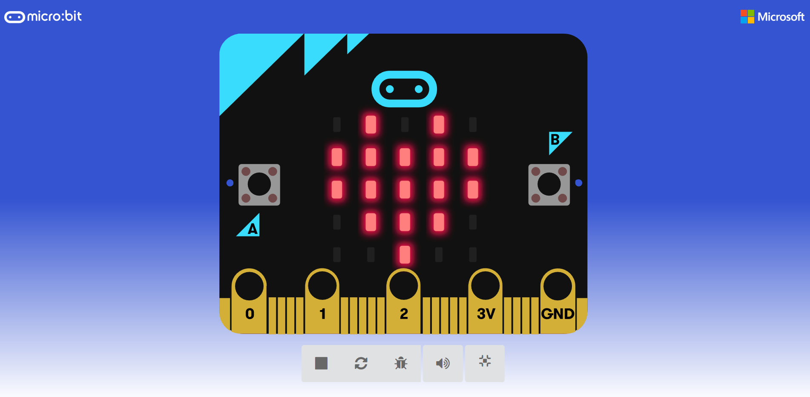
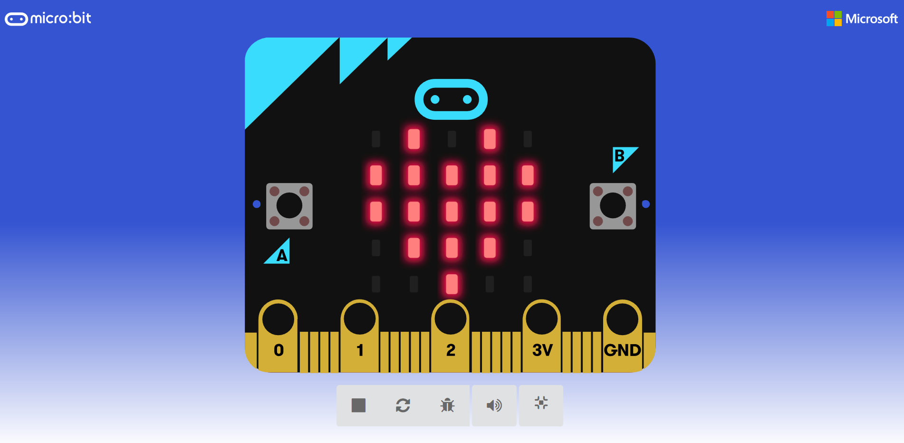

Este sitio plantea una serie de prácticas basadas en la web oficial Makecode y en otras buscadas por el autor.
En esta primera parte no se usan componentes externos, solo la placa Micro:bit.
Autor: Juan Carlos Sánchez Jiménez.

Este sitio plantea una serie de prácticas basadas en la web oficial Makecode y en otras buscadas por el autor.
En esta primera parte no se usan componentes externos, solo la placa Micro:bit.
Autor: Juan Carlos Sánchez Jiménez.

Obra publicada con Licencia Creative Commons Reconocimiento Compartir igual 4.0